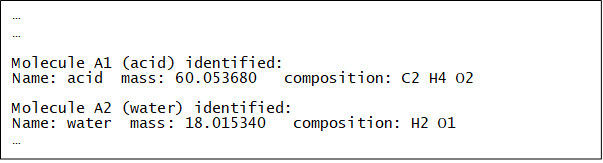
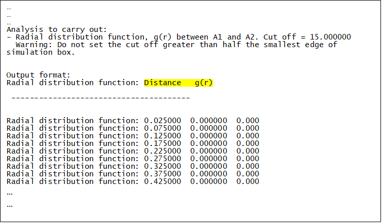

Analysing Results¶
(DL_ANALYSER)
This example shows how to carry out post-analysis on the HISTORY files to determine solvent packing structures around ethanoic acid.
We will use the HISTORY file generated from the DL_POLY sampling run described in the Section: Simulation Run. For this example it has been renamed and supplied as HISTORY_solution.gz (see the DL_ANALYSER input file: dl_analyser.input for an example). It is a truncated version running up to 100,000 steps. See below for the relevant analysis option in the DL_ANALYSER control file- dl_analyser.control1
Step 1: Atom Range Definition
(i) Define a system to be analysed. This is done in the ‘Atom Range Definition Section’. The number ‘21397’ is the total number of atoms in the system. This number can be found in DL_POLY CONFIG. The atom index “1 21397” means all the atoms in the system will be considered (1 to 21397) and they are defined as the ‘Group A’ atoms. The ‘Molecule-base analysis type (2)’ is selected. This means DL_ANALYSER will attempt to locate and classify all molecules in the system, according to the molecular specification stated below. After that, the center of mass of each molecule will be calculated and all analysis will be based on these centre of masses. DL_ANALYSER can distinguish up to 4 different types of molecular specification, which are labelled as ‘Molecule A1’, ‘Molecule A2’, ‘Molecule B1’ and ‘Molecule B2’. The ‘A1’ and ‘A2’ are two types of molecules that must be located within the ‘Group A’ atom index. Whereas, ‘B1’ and ‘B2’ must be located within the ‘Group B’ atom index. Since Group B atoms are undefined in this example, DL_ANALYSER will ignore B1 and B2 specifications. Within the Group A atoms there are two different kinds of molecules: ethanoic acid and water. These are defined as follows:
acid 8
water 3
Which means Molecule A1 has a label ‘acid’, which consists of 8 atoms, and Molecule A2 has a label ‘water’, which consists of 3 atoms. The labels are arbitrary, so long you know what they mean! When DL_ANALYSER is run, the program will look into the atomic configurations and identify A1 and A2 molecules within the Group A atoms.
Below shows the relevant section of dl_analyser.output. It indicates the atomic composition of A1 and A2 according to the molecular specifications in the control file.
Finally, the word ‘auto’ means DL_ANALYSER will determine the periodic boundary conditions based on the cell vectors from the trajectory files.
Step 2: Structural Analysis
To activate the Analysis Section, the master switch must be turned on (1) see dl_analyser_control1. The file test1.out is the results output file for all structural analysis. NOte that in this example all analysis options were switched off except the radial distribution function (RDF). The value ‘15.0’ means any inter-molecular distances (based on the center of masses of the molecules) of more than 15 angstrom will be ignored. The labels ‘A1 A2’ underneath the RDF switch indicate the type of distance pair to be measured. Since the molecule-based analysis has been indicated, then ‘A1 A2’ means the radial distribution between the acid (A1) and water (A2) will be determined.
Step 3: DL_ANALYSER Run
Upon successful execution, dl_analyser.output will be produced, highlighting the general analysis status and reading process. The RDF results are shown in test1.out - the relevant section of the file is shown below as an example of output to the screen while the program is running:
In addition, depending on dl_analyser_control1 other results output files will also be produced.
The first column is the distance between ‘A1’ and ‘A2’ and the second column is the corresponding probability distribution g(r).
Note
Ignore the third column.
The results can be extracted and plot in a graph by various means. For instance:
grep 'Radial distribution function: ' test1.out > rdf
will extract the results and write to a new file called ‘rdf’. The figure below shows the results plot:
Radial distribution function between Molecule A1 and Molecule A2
Step 4: Atom-based RDF Analysis
What if you want to carry out atomistic radial distribution function, say, between water hydrogen and the acid’s carbonyl oxygen? The supplied file dl_analyser.control2 shows you how this can be done.
In this case, the atom-based analysis option is selected, and the RDF will be determined between H801O (water hydrogen) and O20E (carbonyl oxygen of the carboxylic acid). The actual labels can be found from several sources. For instance, from the FIELD file or from DL_FIELD when the FF model was setup (see towards the end of the dl_field.output).
In the DL_F Notation, atom labels with ‘20’ means carboxylic group and atom labels with ‘801’ means TIP3P water model.
Notice that the atom-based analysis will take much longer, because DL_ANALYSER now needs to comb through all the atoms in each trajectory frame in the HISTORY file!